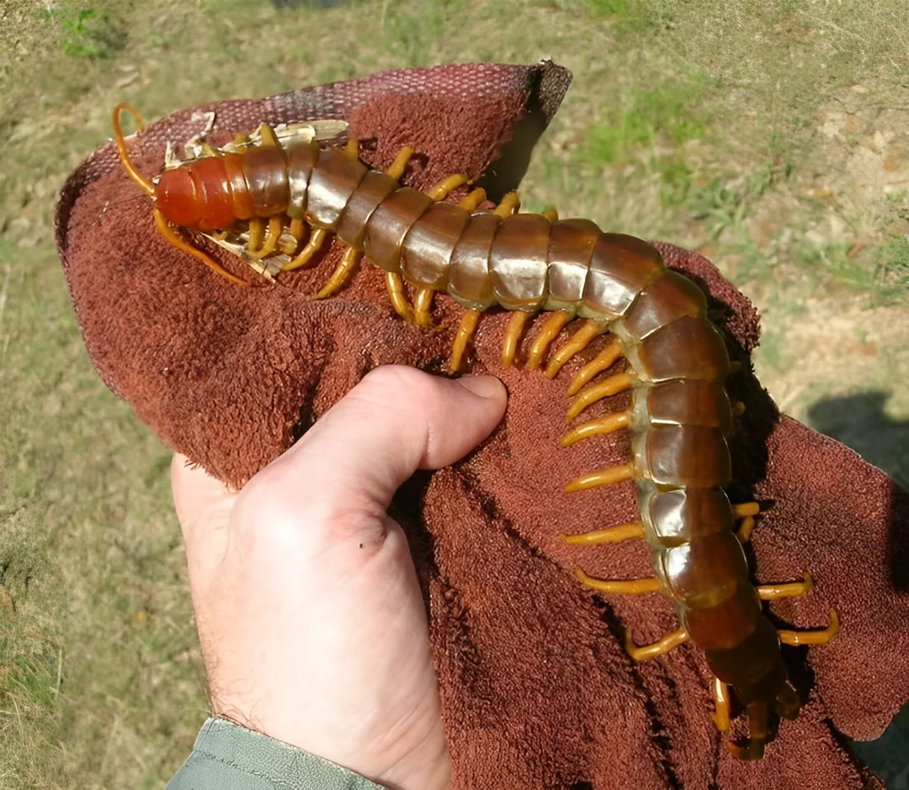

Featured Animals
The Amazonian Giant Centipede
Discover the world’s largest centipede, its habitat, and its role in the rainforest ecosystem.
Poison Dart Frogs
Explore the vibrant colors and potent toxins of these fascinating amphibians.
Leafcutter Ants
Learn how these tiny insects build massive underground colonies and farm fungus.

Harpy Eagles
Meet the rainforest’s apex aerial predator and its impressive hunting skills.
Sloths: Masters of Slow Living
Uncover the secrets behind the sloth’s slow lifestyle and survival strategies.